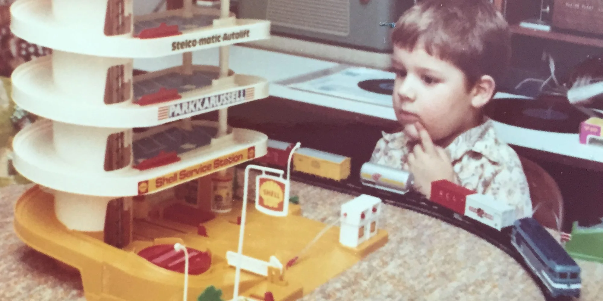

Design and small experiments
Design thinking, prototyping and tiny experiments: try the smallest thing that could work, then decide.

 Designing Your LifeBill Burnett & Dave Evans · 2016Design thinking applied to your own life: prototype conversations and small trials before big decisions. It translates directly to a company's first AI tool.Read more →
Designing Your LifeBill Burnett & Dave Evans · 2016Design thinking applied to your own life: prototype conversations and small trials before big decisions. It translates directly to a company's first AI tool.Read more → Do DesignAlan Moore · 2016A short book about design as a way of working, not a department.Read more →
Do DesignAlan Moore · 2016A short book about design as a way of working, not a department.Read more → Life in PerspectiveTiago Forte · 2026A step-by-step method for the annual life review: look back with gratitude first, look for patterns, then plan.Read more →
Life in PerspectiveTiago Forte · 2026A step-by-step method for the annual life review: look back with gratitude first, look for patterns, then plan.Read more → Tiny ExperimentsAnne-Laure Le Cunff · 2025Treat a change as an experiment with a fixed duration instead of a goal. The same move is what makes a Build Day work: one small build, then decide.Read more →
Tiny ExperimentsAnne-Laure Le Cunff · 2025Treat a change as an experiment with a fixed duration instead of a goal. The same move is what makes a Build Day work: one small build, then decide.Read more → Visual ThinkingWillemien Brand · 2017Drawing the problem before building it. Most scoping on a Build Day happens on paper first.Read more →
Visual ThinkingWillemien Brand · 2017Drawing the problem before building it. Most scoping on a Build Day happens on paper first.Read more →